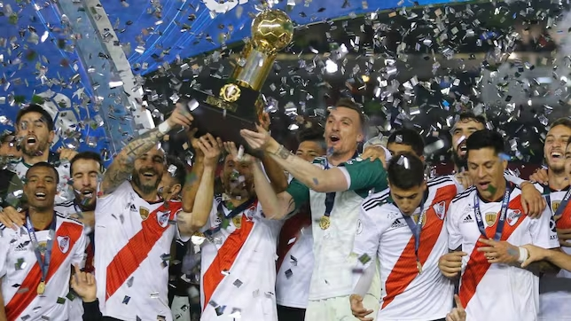
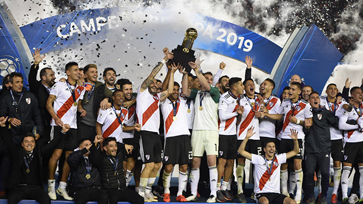

El primer partido se jugó el 22 de mayo de 2019 en el Estadio Arena da Baixada, en Curitiba, Brasil. Athletico Paranaense se impuso por 1-0 con un gol de Marco Ruben a los 25 minutos del primer tiempo. El equipo brasileño mostró un juego intenso y dinámico, aprovechando su condición de local y la cancha de césped sintético. River Plate tuvo dificultades para adaptarse al campo y a la presión del equipo rival, aunque logró mantener el marcador ajustado, dejando la serie abierta para el partido de vuelta.
El 30 de mayo de 2019, River Plate venció 3-0 en el partido de vuelta de la Recopa Sudamericana 2019 contra un equipo brasileño en el Estadio Monumental de Buenos Aires. Los goles fueron de Ignacio Fernández, Lucas Pratto y Matías Suárez. Con este resultado, River Plate se coronó campeón, logrando su tercer título en esta competencia, habiéndola ganado previamente en 2015 y 2016. La victoria destacó la capacidad competitiva del equipo bajo la dirección técnica de Marcelo Gallardo.
